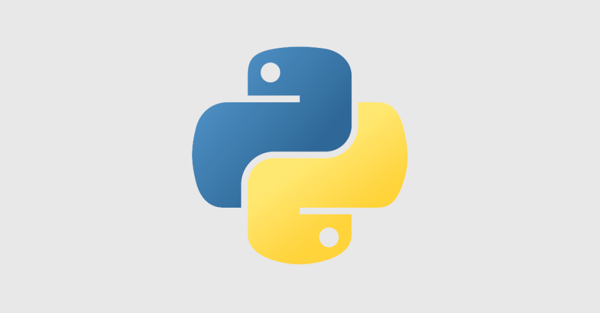

Summary
안녕하세요. 개발자 박현우입니다.
저는 올해 27살이며, 현재 세종대학교 4학년 1학기를 마치고 휴학중인 상태입니다.
호기심이 많고 배우는 것을 좋아하며, 다른 사람들과 소통하는 것을 즐깁니다.
대학교 3학년, 나이로 치면 25살이라는 다소 늦을 수 있는 나이에 컴퓨터공학과를 복수전공하게 되었습니다.
좋은 것을 주고 받으며 서로를 업그레이드 할 수 있는 사람이 되고 싶습니다.
- 1995년 3월 6일 부산에서 태어남
- 2015년 3월 세종대학교 입학(전자정보통신공학과)
- 2016년 3월 3일 ~ 2017년 12월 2일 군 복무(의무경찰)
- 2019년 컴퓨터공학과 복수전공 시작
- 2021년 2월 21일 기준, 4학년 1학기 수료 후 휴학 (남은 학점 : 9학점)
- 2021년 2월 12일 기준 백준 solved.ac 골드 5
Project
| 프로젝트 | 소개 | 개발 참여도 | 추가 정보 |
|---|---|---|---|
| 오픈소스 - MineSweeper |
[OSS-MineSweeper]
github에서 MineSweeper 코드를 찾은 뒤, 그것들을 bugfix, cleancode, revolution이라는
branch로 관리하여 새로운 프로젝트를 만들었습니다. 4명이서 한 팀을 이루었습니다,
팀장의 repository에서 각 팀원이 fork를 하였습니다. git bash를 통하여 git 작업을 하였고 그것을 본인의 repository에 push하는 작업을 통하여 git과 github의 원리와 여러 사용법을 익히게 되었습니다. 각자의 팀원의 각자의 repository로 fork후 pull request를 통하여 main branch에 merge하는 과정을 거쳤고 이 과정에서 본인을 제외한 나머지 팀원(3명)이 모두 approve를 해야 merge되는 기능 등도 이용해 보았습니다. # 팀원 : 윤성민, 박제성, 최지웅, 박현우
C
Git
Github
Open Source Software
|
|
|
| 우리의 서울 |
[우리의 서울]
코딩온의 'Python 프레임워크를 활용한 웹 개발' 이라는 수업에서 진행한 프로젝트입니다.
파이썬 프레임워크인 Django를 통하여 제작하였고, 네이버 클라우드 플랫폼을 통해 배포하였습니다. 서울에 대한 전반적인 소개, 홍보 영상 등을 넣었고 6개의 명소를 선정하여 세부적인 소개를 하는 간단한 웹 사이트입니다. # 팀원 : 박현우, 이성민, 이유영
HTML5
CSS3
JavaScript
Bootstrap 4
KAKAO MAP API
Django
Naver Cloud Platform
|
| |
| 2020 데이터 청년 캠퍼스 |
[2조 - PinEat]
'서울특별시 공공자전거 이용현황'이라는 공공데이터에서 약 20만개의 출발지, 반납지의 정보 가공하여 얻어낸 뒤, 그 정보를 카카오 맵 API를 통하여 위도와 경도로 변환하였습니다.
그리고 osmnx라는 외부 라이브러리를 이용하여, 저희가 임의로 만든 '최소 에너지 소비 공식' 을 적용시켜 예측 경로를 만들었습니다. 많이 지나가는 지점을 순위를 매긴 뒤, 그 지점들에 딥러닝을 통하여 예측 매출 등급을 조사하였고 실제 매출액과 조사하여 유의미한 결과를 거두었습니다. # 팀원 : 곽석우, 박민준, 박상현, 박현우
Python
Pandas
Numpy
OSMNX
KAKAO MAP API
|
|
Awards
| 대회명 | 세부 사항 | 수상 |
|---|---|---|
| 제 6회 세종SW코딩경시대회 |
세종대학교 소프트웨어융합대학
2019년 세종대학교 소프트웨어융합대학에서 개최된 제 6회 세종SW코딩경시대회에 유사전공 자격으로 참가하여 4등상을 받았습니다.
세종SW코딩경시대회란, C언어로 참가하여 알고리즘 문제를 해결하는 대회입니다. 유사전공이란, 주 전공의 소속이 '소프트웨어대학'이 아니라, '전자정보대학'으로 이루어진 그룹입니다. (저는 주 전공이 전자정보대학에 소속된 전자정보통신공학과 입니다.) |
4등 |
| 제4회 TED 스피치 경연대회 |
세종대학교 사회과학대학
2019년 세종대학교 사회과학대학에서 주최한 제4회 TED 스피치 경연대회에 참가하여 장려상을 수상하였습니다.
TED 스피치 경연대회란 자유로운 형식 및 주제의 발표물을 자신만의 개성으로 5분의 시간 내에 청중들에게 스피치하는 프로그램입니다. | 장려상 |
Stacks
| 기술 구분 | 로고 | 활용 수준 |
|---|---|---|
| C |

|
C언어로 포인터, 구조체, 동적 할당 등의 개념 등을 설명할 수 있으며, 큐, 스택, 연결리스트, 트리와 같은 자료구조 등을 직접 구현할 수 있습니다. |
| C++ |

|
클래스를 활용할 수 있으며, 여러 STL을 사용하여 알고리즘 문제 풀이 등에 적용할 수 있습니다. |
| Java |

|
계산기 등과 같은 간단한 GUI를 구현해 보았고, JDBC를 통한 mysql과의 연동으로 간단한 insert, delete, update 기능이 가능한 gui 프로젝트를 한 경험이 있습니다. |
| python |

|
numpy, pandas와 같은 데이터 분석, folium과 같은 시각화 등의 툴도 이용할 수 있으며 여러 내장 함수를 포함한 함수를 자신있게 사용할 수 있습니다. 또한 json/xml 형식의 공공데이터 api 등을 파싱하여 이용해본 경험도 있습니다. 최근에는 코딩테스트 준비를 python으로 하고 있습니다. |
| JavaScript |

|
Node js를 공부하며 JavaScript에 대한 공부의 필요성을 느껴 시간을 투자하고 있습니다. 문법과 내장 함수들을 공부하고 있으며, 동시에 jquery, ajax에 대하여도 공부하고 있습니다. |
| Django |

|
Django를 이용하여 MTV패턴을 이용하여 웹 어플리케이션 서버를 구동시킬 수 있으며 CRUD 기능을 활용하여 회원가입, 로그인, 글쓰기 기능 등을 구현할 수 있습니다. |
| Mysql |

|
데이터베이스 테이블을 설계할 수 있으며, CRUD 기능을 자유자재로 사용할 수 있습니다. |
Education
| 교육명 | 소개 | 일정 |
|---|---|---|
| 2020 데이터 청년 캠퍼스 |
[한국데이터산업진흥원]파이썬 기반의 데이터분석 및 딥러닝
파이썬, 케라스, 텐서플로우 등의 분석도구 사용 · 통계학 기반의 데이터 처리 프로세스 학습 · 딥러닝 기법을 이용한 데이터 분석 실무 교육 · 딥러닝 기반 자연어처리 교육
데이터분석 개요, 파이썬, 통계기반 데이터 분석, 컴퓨터비전과 딥러닝을 학습하였고, 프로젝트를 제출하였습니다.
6월 말에 시작하여 9월 초까지 진행되었습니다.
|
2020.06 ~ 2020.09
|
| Python 프레임워크를 활용한 웹 개발 |
[코딩온]
2021년 1월 5일부터 2021년 1월 29일까지 총 80시간동안 웹 개발 과정을 수강하였습니다. 네이버 클라우드 플랫폼에서 2개의 리눅스 서버를 빌려, 리눅스 환영에서 수업을 진행하였습니다.
리눅스 환경에서 HTML, CSS, JavaScript와 Bootstrap등을 학습하였으며, SSH Key를 이용하여 Visual Studio Code에서 원격 서버를 연동하는 법을 배웠습니다. Apache와 Django 등을 학습하였으며, Django를 이용하여 `우리의 서울` 이라는 서울을 소개해주는 간단한 웹 프로젝트를 완성하였으며, 네이버 클라우드 플랫폼으로 배포하였습니다. |
2021.01.05~2021.01.28
|
| All-In-One 알고리즘 2020 하반기 |
[세종대학교]
C++ 기초 문법, 자료구조와 STL등을 학습하였고 그것을 바탕으로 재귀함수, 탐색, 분할과 정복, 동적 계획법,
그래프 알고리즘, 알고리즘 성능향상 기법 등을 학습하였습니다.
|
2020.09~2020.11
|
| 웹 기반 AI 융합 개발자 양성 과정 |
[SSAC] (Seoul Software Academy Cluster)]
웹 기분 AI 융합 개발자 양성 프로그램에 중간에 참여할 기회를 얻어 참여를 준비중이며, 현재 node js를 학습하였고, 간단한 채팅 프로그램 등을 구현할 수 있는 수준입니다.
|
2021.02.15 ~
|
Qualification
국가 공인 자격증이 아닌 경우 제외하였습니다.
정보처리기사
발급기관 : 한국산업인력공단
취득일 : 2020.11
한국사능력검정시험 2급
발급기관 : 국사편찬위원회
취득일 : 2017.01
워드프로세서 1급
발급기관 : 대한상공회의소
취득일 : 2006.03
Contact
제 소개는 여기까지입니다. 읽어주셔서 감사합니다.
Park Hyun Woo
Developer- Position : Developer
- Email : gusdn3477@naver.com
- github : https://github.com/gusdn3477